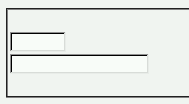
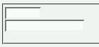

form要素の子孫要素（input要素など）にsize属性と幅指定のスタイルを同時に指定した場合、本来優先されるべきスタイルシートでの指定でなく、size属性で指定した値が反映される。
<form action="#"><div> <input type="text" name="a" size="8"><br> <input type="text" name="b" size="8" style="width: 10em;"> </div></form>
2つの入力ボックスはsize属性では同じサイズを指定していますが、後のボックスだけはスタイルシートも用いて幅を定義しています。
WinIE6.0での表示（標準モード）
N6.2.2での表示（標準モード）
N6.2.2およびMoz1.0ではスタイルシートでの設定が優先されます。